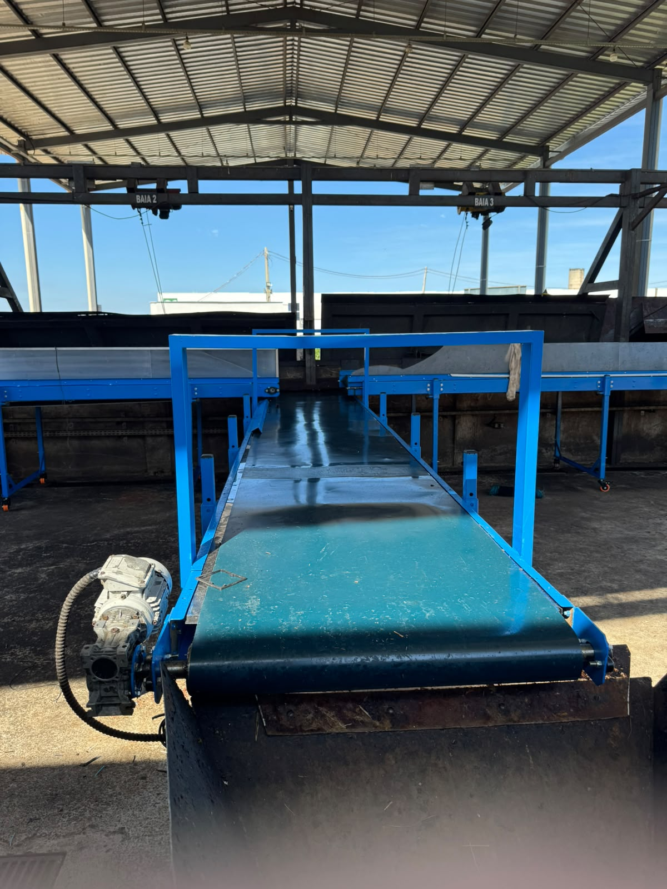
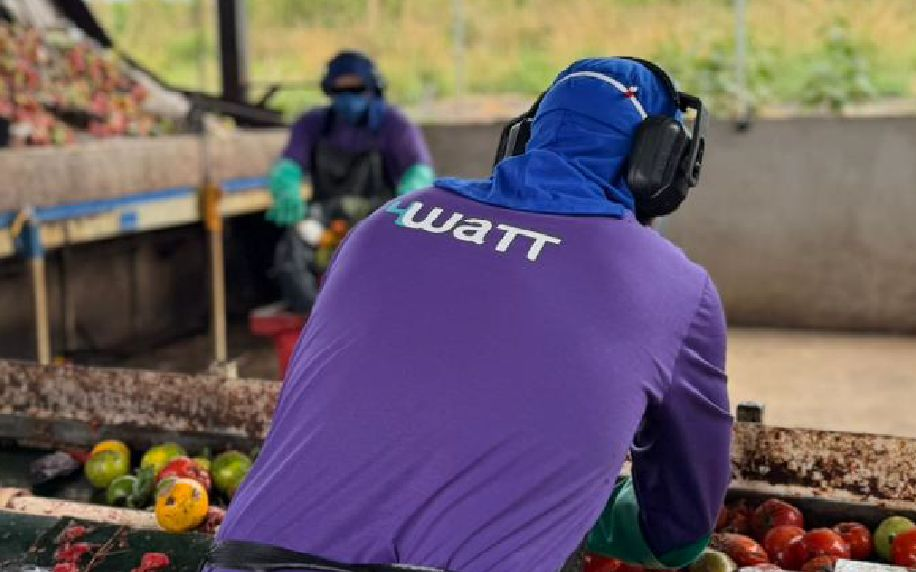

PGRS, MTR e documentação legal
Elaboramos e mantemos o seu PGRS, emitimos e controlamos os MTR e cuidamos dos demais documentos exigidos do gerador. Você para de correr atrás de prazo — e de explicar atraso.

Assinatura mensal de gestão de resíduos com engenharia própria: PGRS, MTR e toda a documentação legal em dia, indicadores todo mês, plataforma de gestão e o projeto de triagem que faz o material voltar como receita — sem você contratar mais ninguém.
Diagnóstico gratuito, resposta em até 1 dia útil e sem compromisso. Mensalidade sob consulta, definida na proposta — depois que um engenheiro vir a sua operação.
Não é software avulso nem consultoria por hora. É um contrato mensal em que a 4WaTT passa a responder pela gestão de resíduos da sua operação — com PGRS, MTR e demais documentos legais inclusos, assessoria na Certificação em Sustentabilidade Ambiental e engenheiro responsável assinando o que entrega.
Elaboramos e mantemos o seu PGRS, emitimos e controlamos os MTR e cuidamos dos demais documentos exigidos do gerador. Você para de correr atrás de prazo — e de explicar atraso.
Quanto foi gerado, para onde foi e quanto foi recuperado — por fração e por unidade, no mesmo formato todo mês, para dar para comparar.
Acesso para a sua equipe: documentos, indicadores e o andamento da operação em um lugar só, sem depender de planilha compartilhada.
Visitas técnicas, pareceres e plano de melhoria assinados por engenharia própria — mais o suporte e a assessoria para a sua Certificação em Sustentabilidade Ambiental.
Projeto de engenharia da triagem, equipamentos, obra de implantação e operação e manutenção em campo são dimensionados no diagnóstico e podem entrar no plano contratado, conforme o nível escolhido — em vez de virarem uma surpresa no meio do contrato.
Gestão de resíduos é a disciplina que organiza a geração, a segregação, a rastreabilidade e a destinação do que uma operação descarta — e define quanto desse material volta como receita em vez de sair como custo. No Brasil, segundo o Panorama dos Resíduos Sólidos 2025 (ABREMA), apenas 8,7% dos resíduos sólidos urbanos gerados em 2024 foram encaminhados à reciclagem, e 40,3% ainda tiveram disposição final inadequada.
A Lei 12.305/2010, que institui a Política Nacional de Resíduos Sólidos, já estabelece a ordem de prioridade: não geração, redução, reutilização, reciclagem, tratamento e só então disposição final. Na prática, a maior parte das operações que avaliamos para na etapa documental — não por falta de intenção, mas por falta de estrutura técnica entre o que se gera e o que se poderia recuperar.

Se pelo menos duas destas descrevem a sua empresa, o diagnóstico gratuito já se paga em informação.
A destinação vira uma linha fixa de despesa, renegociada por preço e nunca por engenharia. Ninguém mede o que está sendo enterrado junto.
Documentação dispersa entre setores, prazos controlados por planilha e evidências que só aparecem quando alguém pede. O risco não é teórico: é de prazo.
Cada filial mede de um jeito, com fornecedor diferente e critério próprio. Sem base comum, não existe indicador consolidado nem comparação entre plantas.
O material tem valor de mercado, mas sai misturado. Sem área de triagem, fluxo definido e equipamento dimensionado, o reciclável vira rejeito no portão.
O que a assinatura mobiliza na prática: quem cuida do dado, quem projeta a estrutura e quem avalia o que dá para recuperar. Sempre a mesma equipe técnica.

Inventário por tipo e por unidade, fluxo documental organizado, indicadores mensais e rotina de conformidade. Vamos além do compliance mínimo: o dado passa a servir para decisão de engenharia, não só para arquivo.

Engenharia de processo aplicada ao volume real: layout da área de recepção, dimensionamento de esteiras, prensas e equipamentos, definição de fluxo e implantação acompanhada em campo.

Avaliamos o potencial de valorização do seu resíduo: conexão com cadeias de reciclagem para o material seco e, quando o volume e a fração orgânica justificarem, rota de biogás ou biometano — a engenharia que já é o núcleo da 4WaTT.
Três níveis, todos por assinatura mensal, todos com a documentação legal inclusa. O que muda é o quanto a nossa engenharia entra em campo. A mensalidade sai na proposta, depois do diagnóstico gratuito — e não muda sem que o escopo mude.
Estes quatro itens estão inclusos do nível Essencial ao Completo. Nenhum deles é cobrado à parte.
Tira a sua empresa da zona de risco documental e mostra, pela primeira vez, o que ela realmente gera.
PGRS, MTR, documentos, certificação e plataforma inclusos
Onde o resíduo deixa de ser só despesa: engenheiro em campo e o que dá para recuperar, com número.
PGRS, MTR, documentos, certificação e plataforma inclusos
A 4WaTT projeta, implanta e opera a triagem — do jeito que já faz no CEASA Goiás.
PGRS, MTR, documentos, certificação e plataforma inclusos
Equipamentos e obra civil têm orçamento próprio, apresentado junto com a proposta — nunca cobrado por fora depois. O diagnóstico que define o nível adequado é gratuito e não obriga a contratar.
Uma central de abastecimento concentra, em um único endereço, um volume de orgânico que poucas indústrias geram — e com variação diária. O trabalho começou por onde sempre começa: medir o que entra.
Operação de triagem herdada, com esteiras de recepção subdimensionadas para o volume real recebido, equipamentos mecânicos com desgaste acumulado gerando paradas não planejadas, baias de recepção sem rotina de limpeza e equipe sem regime de contratação consolidado. Não havia canal estruturado de indicadores entre a operação e a gestão.
Diagnóstico em campo do fluxo de recebimento e da capacidade real de processamento; registro formal das inconformidades de projeto herdadas; reengenharia das esteiras subdimensionadas; correção mecânica de bombas e componentes; redefinição das rotinas de triagem e de limpeza das baias; regularização, formação e treinamento da equipe operacional.
Área de recepção e triagem redimensionada para a demanda corrente, rotina operacional documentada, equipe treinada em operação e manutenção, plano de manutenção dos equipamentos críticos e acompanhamento periódico de indicadores com o cliente, hoje disponível pela plataforma de gestão.


Resultados medidos — a preencher com dado real antes de publicar
Não publicamos estimativa como resultado. Os números desta seção só entram no ar depois de apurados e validados com o cliente.
Quatro etapas, sem etapa pulada. Você só vê preço na etapa 2 — e só vê preço depois que um engenheiro entendeu a sua operação.
Levantamento do resíduo gerado, do fluxo atual e das obrigações aplicáveis, com visita técnica e caracterização gravimétrica. Fecha com um parecer objetivo do que dá para recuperar. Sem custo e sem obrigação de contratar.
Apresentamos o nível adequado ao seu caso, as entregas mensais nomeadas uma a uma e a mensalidade. Se houver projeto, equipamento ou obra, o orçamento vem junto — nada aparece depois.
Organização documental inicial, cadastro da operação na plataforma e treinamento da sua equipe. Nos contratos que incluem estrutura física: montagem, comissionamento e rotinas operacionais escritas.
Todo mês: documentação atualizada, relatório de indicadores e acompanhamento do engenheiro responsável. O escopo é revisto quando a operação muda — e a mensalidade só muda com ele.

A 4WaTT é uma empresa de engenharia — mecânica, civil, elétrica e ambiental — que projeta e opera plantas de biogás e biometano. Quando o diagnóstico aponta que a solução exige uma esteira redimensionada, uma área de recepção refeita ou uma rota energética para o orgânico, quem dimensiona, especifica e acompanha a obra é a mesma equipe que assinou o diagnóstico.
As quatro disciplinas dentro de casa. O projeto não troca de mão entre o diagnóstico e a obra.
Dimensionamos, especificamos e acompanhamos a implantação — inclusive quando implica intervenção civil e elétrica.
Biogás e biometano são o núcleo técnico da empresa. Avaliamos a rota com critério de projeto, e dizemos quando não fecha.
Temos equipe em planta de resíduos em operação. O que propomos já passou pelo teste do turno.
Acesse a plataforma de gestão para consultar documentação, indicadores e o andamento da operação.
Um serviço de gestão de resíduos por assinatura mensal. A 4WaTT passa a responder pela gestão de resíduos da sua operação e entrega, todo mês: documentação e inventário em dia, relatório de indicadores por fração e por unidade, acesso à plataforma de gestão e o acompanhamento de um engenheiro responsável. Conforme o nível contratado, entram também o projeto de engenharia da triagem, a implantação da estrutura e a operação e manutenção em campo.
A mensalidade é sob consulta e é apresentada na proposta, depois do diagnóstico gratuito. Ela depende do volume gerado, do número de unidades atendidas, das frações envolvidas (orgânico, reciclável seco, Classe I) e do nível contratado — Essencial, Gestão ou Completo. Não trabalhamos com tabela fechada porque uma unidade de 5 t/mês e uma rede com oito filiais não dão o mesmo trabalho. Equipamentos e obra, quando fazem parte do escopo, têm orçamento próprio apresentado junto.
Gestão de resíduos é o conjunto de rotinas técnicas e documentais que controla a geração, a segregação, o armazenamento, o transporte e a destinação final do que uma operação descarta. Na 4WaTT o escopo inclui inventário por fração gerada, organização documental, indicadores mensais de geração e recuperação e — o que diferencia de uma consultoria puramente documental — o projeto de engenharia da estrutura de triagem que torna a recuperação possível.
Gestão organiza e comprova o que já acontece. Um projeto de reciclagem ou triagem muda o que acontece: define layout de recepção, dimensiona esteiras, prensas e áreas, e cria o fluxo físico que separa o material com valor do rejeito. Um sem o outro trava — dado sem estrutura não recupera material, e estrutura sem dado não se dimensiona corretamente.
Sim. Elaboração e manutenção do PGRS, emissão e controle dos MTR, os demais documentos legais exigidos do gerador e o suporte à Certificação em Sustentabilidade Ambiental estão inclusos do nível Essencial ao Completo, sem cobrança à parte. O que muda entre os níveis é o quanto a engenharia da 4WaTT entra em campo — visitas técnicas, caracterização, projeto de triagem e operação. Documento em dia é o piso do serviço, não o produto premium.
A obrigação legal continua sendo do gerador — isso a lei não transfere. O que muda é quem opera: a 4WaTT emite os MTR, controla prazos, mantém o histórico rastreável e responde pelas rotinas nas plataformas públicas aplicáveis, em nome da sua empresa. E vai além do compliance mínimo: o mesmo dado que alimenta a obrigação legal vira o estudo do que dá para recuperar. Nenhum sistema de controle faz essa segunda parte.
Quem emite certificado é o organismo certificador — nenhuma empresa pode certificar a si mesma nem ao cliente. O que está incluso é o suporte e a assessoria para você chegar lá: organização das evidências, indicadores mensais consistentes, documentação do sistema de gestão de resíduos, preparação para auditoria e acompanhamento técnico durante o processo. É exatamente a parte em que a maioria das empresas trava.
Geradores de volume relevante e recorrente: indústria e agroindústria, frigoríficos, centrais de abastecimento (CEASA), redes de varejo e supermercados, condomínios comerciais e operações logísticas. O critério não é o setor, e sim a existência de volume concentrado o bastante para justificar estrutura de triagem própria ou compartilhada.
Quando a fração orgânica é grande, constante e pouco contaminada. A avaliação considera volume diário, sazonalidade, teor de sólidos e a distância até o uso final da energia. A 4WaTT faz esse estudo com o mesmo critério usado em seus projetos de biodigestão — e diz claramente quando a rota energética não fecha, em vez de empurrar uma planta que não se paga.
Não. A 4WaTT não é transportadora nem aterro: a gestão funciona com os fornecedores de coleta e destinação que você já usa. O que fazemos é organizar, medir e cobrar desempenho dessa cadeia — e, quando o diagnóstico mostra que o material está indo para o destino errado, apontar a alternativa com o número na mão. Trocar fornecedor é decisão sua, não condição de contrato.
Após o contato, um engenheiro da 4WaTT levanta o perfil da operação: resíduo predominante, volume aproximado por mês, número de unidades e o que já existe de estrutura. O retorno é uma leitura preliminar do potencial de triagem e valorização, sem custo e sem compromisso. Havendo aderência, a etapa seguinte é a visita técnica e a caracterização em campo.

Um engenheiro da nossa equipe retorna para entender a operação, o volume gerado e o que já existe de estrutura. Depois disso você recebe uma proposta com o nível de plano indicado, as entregas mensais listadas e a mensalidade. Sem compromisso e sem proposta automática.
Prefere falar direto? contato@4watt.tech · WhatsApp
Preencha e retornamos em até 1 dia útil. O diagnóstico é gratuito.
Os dados enviados são usados apenas para responder a esta solicitação, conforme a Política de Privacidade (LGPD).